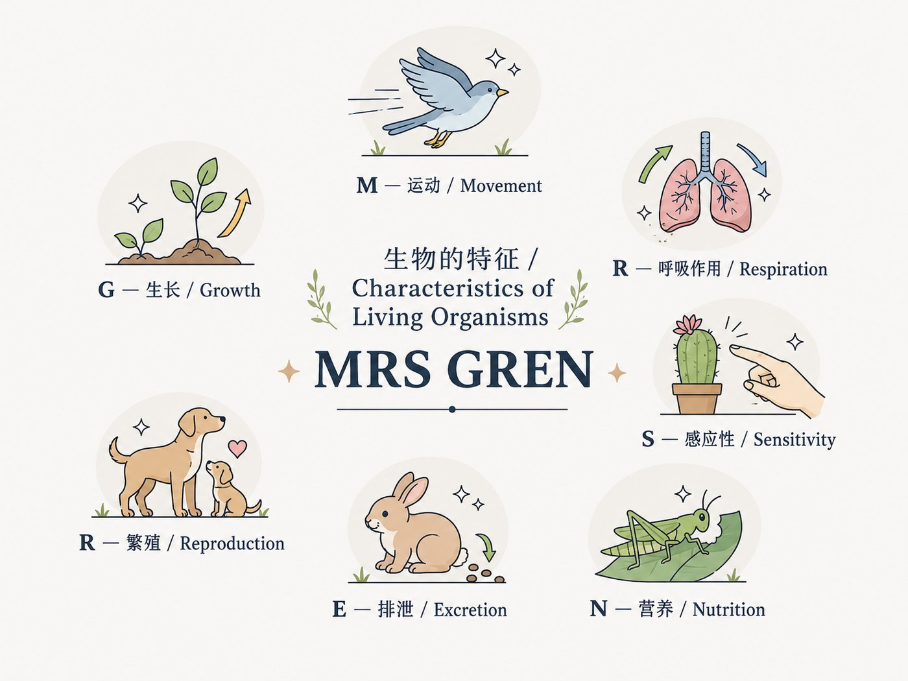
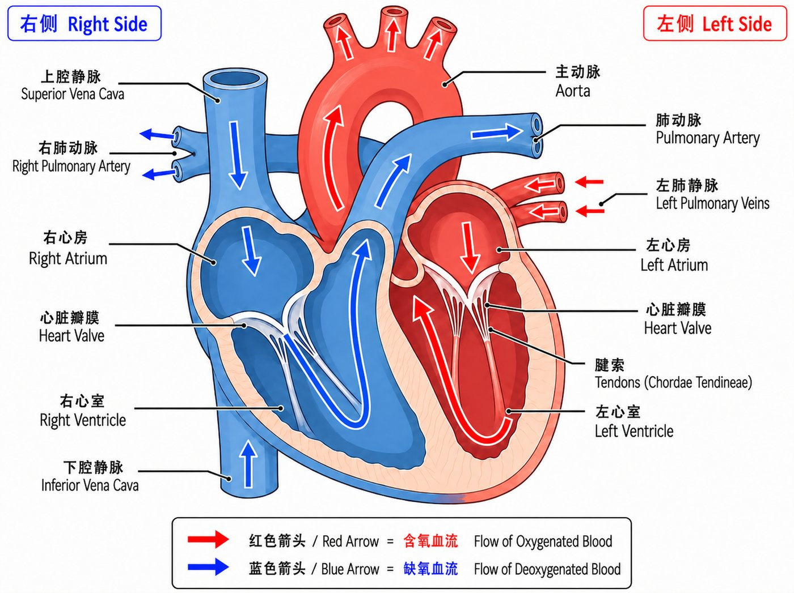
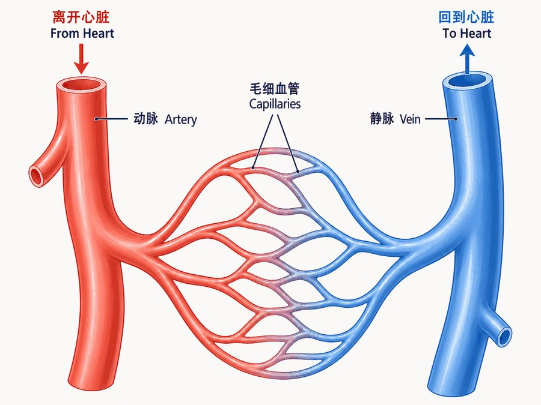
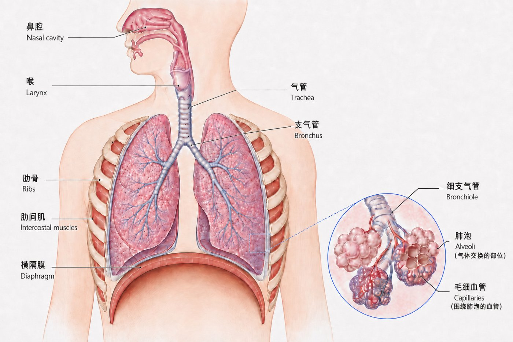

B1
生命特征Characteristics of Living Organisms
︾
MRS GREN — 七大生命特征（必背）Core
- Movement运动
- 生物体（或其部分）改变位置的动作（an action by an organism causing a change of position or place）。
- Respiration呼吸作用
- 细胞内分解养分释放能量的化学反应（chemical reactions that break down nutrients to release energy）——注意：不是"呼吸动作 breathing"，详见 B12。
- Sensitivity感应性
- 感知内外环境变化并作出适当反应的能力（the ability to detect and respond to changes in the environment）。
- Growth生长
- 体积和干重（dry mass）永久性、不可逆的增加（a permanent increase in size and dry mass）。
- Reproduction生殖
- 产生同类新个体（后代）的过程（processes that make more of the same species）。
- Excretion排泄
- 把体内代谢产生的废物、以及过量物质排出体外（removal of the waste products of metabolism, and substances in excess）。注意区分 B7 的 egestion（排遗）——那是未被消化的食物残渣，不是代谢废物。
- Nutrition营养
- 摄取有机养分和矿物质离子，作为能量来源、用于生长和发育（taking in of nutrients for energy, growth and development）。
MRS GREN 图解 Visual Summary背景

Q: State three characteristics shown by all living organisms.
A: Nutrition — taking in of nutrients for energy and growth; Respiration — chemical reactions that break down nutrients to release energy; Excretion — removal of the waste products of metabolism.
B2
细胞Cells
︾
动物细胞 vs 植物细胞Core
| 结构 Structure | 动物细胞 Animal | 植物细胞 Plant |
|---|---|---|
| Cell wall细胞壁 | ✗ | ✓ cellulose 纤维素构成，提供支撑 |
| Cell membrane细胞膜 | ✓ | ✓ |
| Cytoplasm细胞质 | ✓ | ✓ |
| Nucleus细胞核 | ✓ | ✓ |
| Chloroplast叶绿体 | ✗ | ✓ 光合作用场所，只在能进行光合作用的细胞中出现 |
| Permanent vacuole永久液泡 | ✗ 小/无 | ✓ 大而永久，充满细胞液 cell sap |
| Mitochondria线粒体 | ✓ 呼吸作用场所 | ✓ |
| Ribosomes核糖体 | ✓ 合成蛋白质 | ✓ |
细菌细胞 Bacterial CellExtended
有 cell wall（细胞壁，成分不是纤维素）、cell membrane（细胞膜）、cytoplasm（细胞质）、ribosomes（核糖体）——但没有由核膜包裹的细胞核（no nucleus），遗传物质是一条环状 DNA（circular DNA），裸露在细胞质中；还可能带有一个或多个额外的小环状 DNA，叫 plasmid（质粒）。
细胞→组织→器官→系统 Levels of OrganisationCore
- Tissue组织
- 一群结构和功能相似、共同执行特定功能的细胞（a group of cells with similar structures, working together to perform a shared function）。例：muscle tissue（肌肉组织）。
- Organ器官
- 由多种组织构成、共同执行特定功能的结构（a structure made of a group of tissues working together to perform specific functions）。例：胃（stomach）由肌肉组织、腺体组织等构成。
- Organ system器官系统
- 一组器官协同工作，共同完成一项或多项生命功能。例：消化系统（digestive system）。
特化细胞 Specialised CellsCore
- Root hair cell 根毛细胞 — 表面积大，负责吸收（absorption）水分和矿物质离子
- Palisade mesophyll cell 栅栏组织细胞 — 含大量叶绿体，负责光合作用（photosynthesis）
- Red blood cell 红细胞 — 无细胞核、双凹圆盘形，负责运输氧气
- Sperm cell 精细胞 — 有尾部（鞭毛）帮助游动，负责运输遗传物质到卵细胞
- Neurone 神经元 — 细长、有分支，负责快速传递电信号
放大倍数 MagnificationCore
Magnification（放大倍数）= image size（图像大小）÷ actual size（实际大小）。单位要先统一，常用换算：1mm = 1000μm，1μm = 1000nm。
Q: 图中细胞长度（image size）为 40mm，实际长度（actual size）为 0.02mm，求放大倍数。
A: Magnification = image size ÷ actual size = 40 ÷ 0.02 = ×2000。（代入前先确认单位一致，此题已统一为mm。）
Q: 一张细胞照片放大倍数为 ×500，图中细胞长度（image size）量得为 5mm，求该细胞的实际长度（actual size），并以μm为单位作答。
A: Actual size = image size ÷ magnification = 5mm ÷ 500 = 0.01mm。转换为μm：0.01mm × 1000 = 10μm。（题目要求以μm作答，别忘了最后一步单位换算。）
B3
物质进出细胞Movement into and out of Cells
︾
三种运输方式对比Core
| 方式 | 定义 | 是否耗能 |
|---|---|---|
| Diffusion扩散 | 粒子从高浓度区域随机运动，净移动到低浓度区域（顺浓度梯度 down a concentration gradient） | ✗ |
| Osmosis渗透 | 水分子通过半透膜（partially permeable membrane），从高水势（higher water potential）移动到低水势 | ✗ |
| Active transport主动运输 | 粒子从低浓度移动到高浓度（逆浓度梯度 against a concentration gradient） | ✓ 能量来自呼吸作用 respiration |
影响扩散速率的因素 Factors Affecting Diffusion RateExtended
- Concentration gradient 浓度梯度 — 梯度越大（两边浓度差越大），扩散越快
- Surface area 表面积 — 交换表面积越大，同时扩散的粒子越多，速率越快
- Distance 距离 — 需要扩散的距离越短，速率越快（这也是为什么细胞和交换表面通常很薄/很小）
- Temperature 温度 — 温度升高，粒子动能增加、运动加快，扩散速率提高
渗透对植物细胞的影响（高频考点）Core
- Turgid膨胀的
- 细胞处于低浓度溶液（浓溶液外/稀溶液环境）中吸水膨胀，细胞壁提供反作用力（阻止细胞破裂），产生 turgor pressure（膨压），使细胞保持坚挺——这也是植物茎叶保持挺立的原因之一。
- Flaccid松软的
- 细胞失水，不再膨胀，但细胞膜还未脱离细胞壁。
- Plasmolysis质壁分离
- 细胞放入高浓度溶液（相对细胞内液更浓）中，大量失水，细胞膜与细胞壁分离，细胞收缩。
渗透对动物细胞的影响 & 植物 vs 动物对比Core
动物细胞（如红细胞）没有细胞壁，遇到渗透时没有"细胞壁挡着"这道保护，后果比植物细胞严重得多：
- Lysis / Haemolysis溶胀/溶血
- 动物细胞放入低浓度（稀）溶液中，持续吸水但没有细胞壁限制体积，最终细胞膜胀破（cell bursts）——红细胞的这种破裂现象特别称为 haemolysis（溶血）。
- Crenation皱缩
- 动物细胞放入高浓度（浓）溶液中大量失水，细胞皱缩变形（shrivels/crenates）。
| 放入低浓度（稀）溶液 | 放入高浓度（浓）溶液 | |
|---|---|---|
| 植物细胞 Plant cell | 吸水变 turgid（细胞壁挡住，不会破） | 失水 plasmolysis（细胞膜与细胞壁分离） |
| 动物细胞 Animal cell | 吸水直到 lysis 胀破（无细胞壁保护） | 失水 crenation 皱缩 |
Q: Explain why a red blood cell placed in pure water eventually bursts, while a plant cell placed in pure water does not.
A: Water enters both cells by osmosis, down the water potential gradient. The plant cell has a cell wall, which is rigid and provides an opposing force once the cell is turgid, preventing further expansion. The red blood cell has no cell wall — only a cell membrane — so there is nothing to stop it taking in water, and it continues to swell until it bursts (lysis).
Q: Explain why a plant cell placed in a concentrated sugar solution becomes plasmolysed.
A: The sugar solution has a lower water potential than the cell's cytoplasm. Water moves out of the cell by osmosis, down the water potential gradient, through the partially permeable cell membrane. The cell loses water and shrinks, causing the cell membrane to pull away from the cell wall.
B4
生物分子Biological Molecules
︾
三大营养分子的组成Core
- Carbohydrates 碳水化合物 — 由葡萄糖（glucose）组成 starch（淀粉）、glycogen（糖原）、cellulose（纤维素）
- Proteins 蛋白质 — 由氨基酸（amino acids）组成
- Fats and oils 脂肪 — 由脂肪酸（fatty acids）和甘油（glycerol）组成
组成元素 Chemical ElementsCore
| 分子 | 含有的化学元素 |
|---|---|
| Carbohydrates 碳水化合物 | C（碳）、H（氢）、O（氧） |
| Fats and oils 脂肪 | C（碳）、H（氢）、O（氧） |
| Proteins 蛋白质 | C（碳）、H（氢）、O（氧）、N（氮）（有时还含少量 S 硫） |
单体与多聚体 Monomers & PolymersExtended
Starch、glycogen、cellulose 都是由许多个 glucose（单体 monomer）连接而成的大分子（多聚体 polymer）；protein 是由许多个 amino acid 连接而成的多聚体。理解"单体反复连接形成多聚体"这个概念，有助于回答"为什么淀粉分子很大、不溶于水"这类问题。
四种食物检测法（必背，考试常出操作步骤题）Core
| 检测目标 | 试剂 | 操作要点 | 阳性结果 |
|---|---|---|---|
| 淀粉 Starch | Iodine solution 碘液 | 直接滴加到样品上 | 橙棕色 → 蓝黑色 |
| 还原糖 Reducing sugar | Benedict's solution | 加入等量试剂后水浴加热（heat in a water bath） | 蓝色 → 加热后变砖红色沉淀 |
| 蛋白质 Protein | Biuret reagent | 直接加入并摇匀，不需要加热 | 蓝色 → 紫色/淡紫色 |
| 脂肪 Fats/oils | Ethanol（乙醇乳化实验 emulsion test） | 先加乙醇溶解样品，再倒入等量清水 | 出现白色浑浊乳状层 |
Q: Describe a test to show that a food sample contains reducing sugar.
A: Add an equal volume of Benedict's solution to the food sample. Heat the mixture in a water bath that has been brought to boiling. If reducing sugar is present, the solution changes from blue to green, yellow, orange, then a brick-red precipitate forms.
B5
酶Enzymes
︾
核心概念Core
Enzyme（酶）是蛋白质，作为生物催化剂（biological catalyst）参与所有代谢反应，能加快反应速率而本身不被消耗。酶有一个 active site（活性位点），形状与 substrate（底物）互补（complementary shape），像"锁和钥匙"（lock and key）一样结合，形成 enzyme-substrate complex（酶-底物复合体）——这解释了酶的特异性（specificity）：一种酶通常只能作用于一种（或一类）底物。
温度与 pH 对酶活性的影响（高频考点）Core
- 温度过高 → 酶（蛋白质）的形状被破坏（活性位点变形，不再与底物互补）→ denatured 变性 → 不能再结合底物，永久失效
- 温度过低 → 粒子运动慢、酶与底物碰撞频率低 → 反应速率慢，但酶结构未被破坏（温度回升后可恢复活性）
- pH 偏离最适值（optimum pH） → 同样会破坏活性位点形状 → 变性
酶活性 vs 温度的图像描述Extended
典型图像先随温度升高而上升（分子运动加快，碰撞增多），在最适温度（optimum temperature）达到最高点，之后急剧下降到接近零（酶开始变性，活性位点被破坏，最终完全失效）。描述这类图像时要分段说明"上升段的原因"和"下降段的原因"，而不是只说"先升后降"。
Q: Explain why enzyme activity decreases rapidly above the optimum temperature.
A: Above the optimum temperature, the enzyme molecule gains enough energy that its tertiary structure changes shape. This changes the shape of the active site so it is no longer complementary to the substrate. The enzyme is denatured and can no longer form an enzyme-substrate complex, so the rate of reaction decreases.
B6
植物营养Plant Nutrition
︾
光合作用方程式（必背）Core
符号方程式：6CO₂ + 6H₂O → C₆H₁₂O₆ + 6O₂（光照、叶绿素条件下）。定义：photosynthesis 是绿色植物和藻类利用光能把二氧化碳和水转化为有机养分（葡萄糖），并释放氧气作为副产物的过程。
影响光合速率的因素Core
- Light intensity 光照强度
- Carbon dioxide concentration 二氧化碳浓度
- Temperature 温度
这三者中任何一个不足，都会成为限制因素（limiting factor）——即使其他两个因素都很充足，光合速率也无法进一步提高，直到这个不足的因素被改善。
限制因素图像分析Extended
典型的"光合速率 vs 光照强度"图像：一开始光合速率随光照强度增加而上升（此时光照是限制因素）；到某一点后曲线变平（plateau），说明此时光照已经不再是限制因素，是另一个因素（通常是CO₂浓度或温度）在限制速率。想让平台期继续升高，必须增加正在起限制作用的那个因素——这是温室（greenhouse/glasshouse）里补充CO₂、控温的原理。
叶片结构 Leaf StructureCore
需要能在图中认出：chloroplasts（叶绿体）、cuticle（角质层，防止水分流失）、guard cells（保卫细胞）、stomata（气孔，气体进出通道）、upper/lower epidermis（上/下表皮）、palisade mesophyll（栅栏组织）、spongy mesophyll（海绵组织，有空气间隙 air spaces）、vascular bundles（维管束，含 xylem 木质部和 phloem 韧皮部）。
- Palisade mesophyll栅栏组织
- 紧靠叶片上表面，细胞排列紧密、含大量叶绿体，是光合作用的主要场所（光照最先到达的地方）。
- Spongy mesophyll海绵组织
- 细胞间有很多空气间隙，增大了气体（CO₂、O₂）扩散的表面积，帮助气体快速到达/离开细胞。
- Stomata（单数 stoma）气孔
- 由一对 guard cells（保卫细胞）围成的开口，控制CO₂进入和O₂、水蒸气排出；大多分布在叶片下表面，减少水分因阳光直射而过度蒸发。
Q: Explain why the spongy mesophyll layer has large air spaces between the cells.
A: The air spaces provide a large surface area for gas exchange, allowing carbon dioxide to diffuse quickly to the palisade and spongy mesophyll cells, and allowing oxygen produced in photosynthesis to diffuse out towards the stomata.
B7
人体营养Human Nutrition
︾
均衡膳食 Balanced DietCore
A balanced diet（均衡膳食）：包含合适种类、合适比例的各种营养素，能满足身体对能量和营养的需求。
- Carbohydrates碳水化合物
- 主要能量来源。
- Fats脂肪
- 能量储存、保温、保护器官。
- Proteins蛋白质
- 生长和修复组织。
- Vitamins & Minerals维生素 & 矿物质
- 少量需求，但对代谢和健康至关重要，例如钙（calcium，骨骼牙齿）、铁（iron，制造血红蛋白）。
- Fibre纤维
- 帮助肠道蠕动、预防便秘，本身不被消化。
- Water水
- 几乎所有代谢反应都需要水作为介质。
消化系统器官 Digestive SystemCore
附属器官（associated organs）：salivary glands（唾液腺，分泌唾液淀粉酶）、pancreas（胰腺，分泌多种消化酶）、liver（肝，制造胆汁）、gall bladder（胆囊，储存胆汁）。
五个消化相关术语（易混淆，必须区分）Core
- Ingestion摄入
- 把食物/饮料摄入体内（taking food/drink into the body through the mouth）。
- Digestion消化
- 把大分子食物分解成可以被吸收的小分子（breakdown of large, insoluble molecules into small, soluble molecules）。
- Absorption吸收
- 消化后的小分子养分从肠道穿过肠壁进入血液（movement of digested food through the wall of the intestine into the blood or lymph）。
- Assimilation同化
- 被吸收的养分进入细胞、被细胞利用（movement of digested food into the cells of the body where it is used）。
- Egestion排遗
- 未被消化的食物以粪便形式经肛门排出（passing out of food that has not been digested, as faeces）——注意：不是"排泄 excretion"，那是代谢废物（B1、B10）。
三种消化酶Core
| 酶 | 产生部位 | 作用 |
|---|---|---|
| Amylase淀粉酶 | 唾液腺、胰腺 | 淀粉 → 还原糖（麦芽糖） |
| Protease蛋白酶 | 胃、胰腺 | 蛋白质 → 氨基酸 |
| Lipase脂肪酶 | 胰腺 | 脂肪 → 脂肪酸 + 甘油 |
胆汁的作用 BileExtended
Bile（胆汁）由肝脏产生、胆囊储存，经胆管排入小肠，作用是乳化脂肪（emulsification of fats）——把大脂肪滴分解成很多小脂肪滴，增大了脂肪与脂肪酶接触的表面积，从而加快脂肪的消化速度。胆汁还能中和从胃来的酸性食糜，为小肠内的酶提供合适的pH环境。
小肠绒毛的适应 Villi AdaptationsExtended
小肠内壁布满 villi（绒毛，单数 villus），这些结构如何提高吸收效率：数量多、表面积极大（增加吸收面积）；壁只有一层细胞厚（扩散距离短）；内部有丰富的毛细血管网（维持浓度梯度，及时运走吸收的养分）；表面还有更微小的 microvilli（微绒毛），进一步增大表面积。
Q: Explain how villi are adapted for the efficient absorption of digested food.
A: Villi have a large surface area, increasing the rate of diffusion/absorption. Their walls are one cell thick, giving a short diffusion distance. They have a good blood supply (many capillaries), which maintains a steep concentration gradient by carrying absorbed food away quickly.
B8
植物运输Transport in Plants
︾
木质部 vs 韧皮部（必背区分）Core
| Xylem 木质部 | Phloem 韧皮部 | |
|---|---|---|
| 运输方向 | 只能向上（根→叶，单向） | 双向（源 source → 库 sink） |
| 运输内容 | 水（water）和矿物质离子（mineral ions） | 蔗糖（sucrose）和氨基酸（amino acids），此过程叫 translocation（转运） |
| 运输动力 | 蒸腾作用产生的拉力（Extended） | 由源到库的压力差（Extended） |
| 额外功能 | ✓ 支撑：细胞壁木质化，增加强度 | ✗ |
蒸腾作用 TranspirationCore
Transpiration（蒸腾作用）：叶片（主要通过气孔）失去水蒸气的过程（loss of water vapour from a plant, mainly through the stomata）。
- 温度升高 → 水分子动能增加，蒸发和扩散更快 → 蒸腾加快
- 湿度降低 → 叶片内外水蒸气浓度差更大 → 蒸腾加快
- 风速加大 → 及时带走叶片表面的水蒸气，维持浓度梯度 → 蒸腾加快
- 光照增强 → 促使更多气孔张开（便于CO₂进入用于光合作用）→ 间接加快蒸腾
根毛细胞的吸水适应Core
根毛细胞（root hair cell）向外突出成细长的毛状结构，大大增加了表面积，有利于通过渗透（osmosis）吸收水分、通过主动运输（active transport）吸收矿物质离子。
蒸腾拉力（水柱理论）Transpiration PullExtended
叶片蒸腾失水，使叶肉细胞水势降低 → 从相邻木质部导管吸水 → 沿导管内连续的水柱向上传递一股拉力（transpiration pull）→ 这股拉力一路传到根部，促使根部持续从土壤吸水。这解释了木质部内水分运输的动力来源，也是"蒸腾-内聚力-张力学说（cohesion-tension theory）"的简化版本。
Q: Explain why a plant loses more water on a hot, windy day than on a cool, still day.
A: Higher temperature gives water molecules more kinetic energy, increasing the rate of evaporation from cells inside the leaf. Wind removes water vapour from around the stomata, maintaining a steep concentration gradient and speeding up diffusion of water vapour out of the leaf. Both effects increase the rate of transpiration.
B9.1
动物运输 · 循环系统Transport in Animals — Circulatory System
︾
核心定义 DefinitionCore
Circulatory system（循环系统）：由血管（blood vessels）、泵（pump，也就是心脏 heart）和瓣膜（valves）组成的系统，作用是让血液朝一个方向流动（one-way flow）。
双循环 Double Circulation背景
人类（哺乳动物）的血液在一次完整循环中会经过心脏两次，这叫双循环系统（double circulatory system）。好处：血液可以维持较高的压力，运输速度更快。
心脏Heart
心脏结构 StructureCore
- Atrium (atria)心房（复数：atria）
- 心脏上方的两个腔室，负责接收血液（左心房、右心房）。
- Ventricle心室
- 心脏下方的两个腔室，负责把血液泵出心脏（左心室、右心室）。
- Septum室间隔
- 把心脏左右两边分开的肌肉墙，防止含氧血和缺氧血混合。
- Valve瓣膜
- 单向阀门，防止血液倒流（backflow）。
- Coronary artery冠状动脉
- 给心脏自己的肌肉供血的血管。
心脏结构图 Labelled DiagramCore

图中红色箭头 = 含氧血流向；蓝色箭头 = 缺氧血流向。图上"右侧"画在图的左边——这是解剖学的标准画法（面对着这颗心脏看过去）。
视频讲解 Video — 心脏结构与血液循环路径
B站视频，直观讲解心脏结构和血液循环路径，适合先看视频建立空间概念，再回来看下面的文字和血流路径图。
▶ 在 Bilibili 观看 / Watch on Bilibili血流路径（背诵重点）Blood Flow RouteCore
为什么左心室壁比右心室厚？Why is the left ventricle wall thicker?Extended
因为左心室要把血液泵到全身（距离远），而右心室只需要把血液泵到肺（距离近），所以左心室需要更强的肌肉力量，壁更厚。
The left ventricle has to pump blood further — around the whole body — while the right ventricle only pumps blood to the lungs, which are much closer. So the left ventricle needs more muscle to generate higher pressure, giving it a thicker wall.
心脏如何运作 Functioning of the HeartExtended
心跳的一个周期（cardiac cycle）：
- 心房收缩（Atria contract） — 把血液压入心室，心房和心室之间的瓣膜打开。
- 心室收缩（Ventricles contract） — 心室壁肌肉收缩，压力升高，把血液压出心脏（经动脉）；这时心房-心室瓣膜关闭，防止血液倒流回心房。
- 心脏放松（Relaxation） — 心房和心室都放松，血液从静脉流回心房，准备下一个周期。
运动对心率的影响 Physical Activity & Heart Rate
Core 通过实验（如运动前后测脉搏）描述运动会让心率上升。
Extended 还要能解释原因：运动时肌肉需要更多能量，也就是需要更多氧气进行呼吸作用（respiration）→ 心脏跳得更快，把含氧血更快地运送到肌肉，同时更快带走二氧化碳。
冠心病 Coronary Heart Disease (CHD)Extended
冠状动脉（coronary artery，给心脏肌肉自己供血的血管）被堵塞（blockage），导致心脏肌肉得不到足够的氧气和养分。
风险因素 Risk factors（必背）：
- Diet 饮食（高脂肪饮食）
- Lack of exercise 缺乏运动
- Stress 压力
- Smoking 吸烟
- Genetic predisposition 遗传易感性
- Age 年龄
- Sex 性别
A healthy diet (low in fat) and regular exercise can reduce the risk of coronary heart disease by lowering blood cholesterol, maintaining a healthy body weight, and improving the strength and efficiency of the heart muscle.
血管Blood VesselsCore
| 类型 Type | 管壁 Wall | 管腔 Lumen | 瓣膜 Valves | 功能 Function |
|---|---|---|---|---|
| Artery动脉 | 厚，含大量肌肉和弹性纤维 | 小（narrow lumen） | ✗ | 把血液从心脏运出去，能承受高压 |
| Vein静脉 | 薄，肌肉和弹性纤维少 | 大（wide lumen，帮助血液低压下流动） | ✓ | 把血液运回心脏，瓣膜防止血液倒流 |
| Capillary毛细血管 | 只有一层细胞那么薄 | 极窄（约等于一个红细胞的宽度） | ✗ 数量极多、分布密集 |
连接动脉和静脉，是物质交换（氧气/养分/废物）真正发生的地方 |

结构如何适应功能 Adaptations of Blood VesselsExtended
- Artery动脉的适应
- 管壁厚 + 弹性纤维多：能承受心脏泵血产生的高压，并在心跳间隙靠弹性回缩维持血流；肌肉多：可以收缩/舒张来调节血流量；管腔小（lumen narrow）：因为血液本来压力就高，不需要很大的通道。
- Vein静脉的适应
- 血液流到这里压力已经很低，所以管壁可以薄（省组织）；管腔大（lumen wide），降低血流阻力，帮助低压血液顺利回流；瓣膜（valves）防止血液因重力或压力不足而倒流，尤其重要（比如腿部静脉，血要克服重力往上流回心脏）。
- Capillary毛细血管的适应
- 管壁只有一层细胞厚：扩散距离最短，交换效率高；管腔极窄，红细胞几乎要挤着通过，这样血细胞离管壁（也就是离要交换物质的组织）更近；数量多、分支密集，总表面积巨大，让每个细胞附近都有毛细血管经过。
Arteries carry blood at a higher pressure than veins, so they need a thicker, more muscular wall and a narrower lumen to withstand this pressure without bursting. Veins carry blood at a much lower pressure, so they have a thin wall, a wide lumen to reduce resistance, and valves to stop blood flowing backwards.
血液BloodCore
血液的四种成分 Four Components
- Red blood cells红细胞
- 运输氧气（含 haemoglobin 血红蛋白，负责携带氧气）。
- White blood cells白细胞
- 负责免疫：吞噬病原体（phagocytosis）+ 产生抗体（antibody production）。
- Platelets血小板
- 负责血液凝固（clotting）。Extended 凝固的作用是防止失血、防止病原体进入伤口。
- Plasma血浆
- 血液的液体部分，运输血细胞、离子、营养、尿素、激素、二氧化碳。
容易混淆的词汇 Commonly Confused Terms
- Artery 动脉 vs Vein 静脉
- 动脉离开心脏（away from heart），静脉回到心脏（towards heart）——和含不含氧无关！肺动脉里其实是缺氧血。
- Atrium 心房 vs Ventricle 心室
- 心房在上方、负责接收；心室在下方、负责泵出。
- Oxygenated 含氧的 vs Deoxygenated 缺氧的
- 含氧血在心脏左边和体循环里；缺氧血在心脏右边和肺循环里。
B10
疾病与免疫Diseases and Immunity
︾
核心定义Core
- Pathogen病原体
- 引起疾病的生物体（an organism that causes disease），包括细菌（bacteria）、病毒（viruses）、真菌（fungi）、原生生物（protoctists）。
- Transmissible disease传染病
- 病原体可以从一个宿主传给另一个宿主的疾病（a disease in which the pathogen can be passed from one host to another）。
传播方式 TransmissionCore
- Direct contact 直接接触 — 包括血液和体液（body fluids）
- Indirect 间接传播 — 通过污染的表面（surfaces）、食物（food）、水（water）、空气（air，飞沫）、动物媒介（vectors，如蚊子）
身体的天然防御 Body DefencesCore
- Skin 皮肤 — 物理屏障（physical barrier），阻挡病原体进入
- Hairs and mucus in air passages 呼吸道内的鼻毛/黏液 — 阻挡并粘住病原体和灰尘颗粒
- Stomach acid 胃酸 — 强酸环境杀死随食物进入的病原体
- Blood clotting 血液凝固 — 伤口处形成血凝块，防止病原体经伤口进入
- White blood cells 白细胞 — 吞噬病原体（phagocytosis）、产生抗体（antibody production）
白细胞的两种防御方式Extended
- Phagocytosis吞噬作用
- 由 phagocyte（吞噬细胞）执行，包围并吞噬病原体，再用酶将其分解——这是一种非特异性（non-specific）防御，对各种病原体都有效。
- Antibody production抗体产生
- 由 lymphocyte（淋巴细胞）执行，识别病原体表面特定的 antigen（抗原），产生与之互补、专门针对该抗原的 antibody（抗体）——这是一种特异性（specific）防御，同"锁和钥匙"（类比B5酶的特异性）。
主动免疫 vs 被动免疫Extended
| Active immunity 主动免疫 | Passive immunity 被动免疫 | |
|---|---|---|
| 抗体来源 | 身体自己产生抗体 | 从外部获得现成抗体（不是自己产生） |
| 获得途径 | 感染病原体，或接种疫苗（vaccination） | 母乳喂养（breast milk）、胎盘（placenta）、注射抗体 |
| 持续时间 | 较长（有免疫记忆） | 较短（没有免疫记忆细胞） |
Q: Explain how vaccination protects a person from a disease.
A: A vaccine contains a harmless/inactive form of the pathogen (or its antigens). This stimulates white blood cells (lymphocytes) to produce antibodies specific to that pathogen, and produces memory cells. If the person is later exposed to the real pathogen, memory cells allow a faster, stronger secondary immune response, so the person does not become ill.
B11.1
人体气体交换 · 呼吸道结构Gas Exchange in Humans — Structure
︾
气体的路径（吸气时）Air PathwayCore
运动对呼吸的影响 Physical Activity & BreathingCore
通过实验（如运动前后数呼吸次数）描述运动会让呼吸的频率（rate）和深度（depth）都增加——身体需要吸入更多氧气、排出更多二氧化碳。
各结构名称与功能 Structures & Functions背景
- Lungs肺
- 进行气体交换的主要器官。
- Diaphragm横膈膜
- 胸腔底部的肌肉，收缩/放松来改变胸腔体积，驱动呼吸。
- Ribs / Intercostal muscles肋骨 / 肋间肌
- 肋间肌收缩会提起肋骨，帮助胸腔扩张。
- Trachea气管
- 连接喉和支气管的管道，管壁有软骨环支撑，防止塌陷。
- Bronchi / Bronchioles支气管 / 细支气管
- 气管向下分支变细，最终连接到肺泡。
呼吸系统结构图 Respiratory System Diagram背景

从鼻腔到肺泡的完整气体通路：鼻腔（Nasal cavity）→ 喉（Larynx）→ 气管（Trachea）→ 支气管（Bronchus）→ 细支气管（Bronchiole）→ 肺泡（Alveoli，气体交换的部位），肺泡周围包裹着毛细血管（Capillaries）。
呼吸机制Mechanism of Breathing背景
提示：这部分机制细节不在 Cambridge Combined Science 0653 syllabus 明确列出的考点内（该 syllabus 只要求"识别结构"+"描述运动对呼吸频率/深度的影响"），但理解它有助于建立整体概念，如果学校教材另有要求，可以保留讲解。
| Inhalation吸气 | Exhalation呼气 | |
|---|---|---|
| Diaphragm 横膈膜 | 收缩、变平（contracts, flattens） | 放松、向上拱起（relaxes, domes upward） |
| Intercostal muscles 肋间肌 | 收缩，肋骨向上向外移动 | 放松，肋骨向下向内移动 |
| 胸腔体积 Volume | 增大（increases） | 减小（decreases） |
| 胸腔压力 Pressure | 降低，空气被吸入 | 升高，空气被排出 |
肺泡与气体交换Alveoli & Gas ExchangeExtended
肺泡为什么适合气体交换？
这是 Supplement 内容——只有 Extended 学生需要掌握这四个特征并能写出来；Core 学生不需要。
- Large surface area 表面积大 — 数以亿计的肺泡，总表面积巨大，能同时进行大量气体交换。
- Thin surface (wall) 管壁薄 — 肺泡壁和毛细血管壁都只有一层细胞厚，气体扩散距离短。
- Good blood supply 血供好 — 肺泡外包裹着密集的毛细血管网（capillaries），不断带走氧气、带来二氧化碳。
- Good ventilation 通气好 — 呼吸动作持续更新肺泡内的空气，维持浓度梯度（concentration gradient）。
Alveoli are well adapted for gas exchange because they have a large surface area, a thin wall (one cell thick), a good blood supply, and good ventilation — all of which speed up the rate of diffusion of oxygen and carbon dioxide.
气体交换的方向 Direction of Exchange背景
气体交换靠的是扩散（diffusion）：气体从浓度高的地方移动到浓度低的地方，不需要消耗能量。
容易混淆的词汇 Commonly Confused Terms
- Larynx 喉 vs 喉结
- Larynx 是包含声带的整个器官；喉结只是软骨外部突起，两者不是同一个概念。
- Bronchus 支气管（单数） vs Bronchi （复数）
- 一个是 bronchus，两个以上是 bronchi。
- Breathing 呼吸动作 vs Respiration 细胞呼吸
- Breathing 指吸气呼气的物理动作（B11 内容）；respiration 指细胞内分解葡萄糖释放能量的化学反应（属于 B12，是完全不同的概念，考试中很容易被混淆）。
B12
呼吸作用Respiration
︾
有氧呼吸方程式（必背）Core
符号方程式：C₆H₁₂O₆ + 6O₂ → 6CO₂ + 6H₂O。Aerobic respiration（有氧呼吸）：在细胞内利用氧气分解葡萄糖释放能量的化学反应（the chemical reactions in cells that use oxygen to break down nutrient molecules to release energy）。
能量的用途 Uses of EnergyCore
肌肉收缩（muscle contraction）、蛋白质合成（protein synthesis）、细胞分裂（cell division）、生长（growth）、主动运输（active transport，见B3）、维持体温恒定（maintenance of constant body temperature）。
无氧呼吸 Anaerobic RespirationCore
在没有氧气时进行的呼吸方式，释放的能量比有氧呼吸少得多（因为葡萄糖没有被完全分解）。
| 人体肌肉细胞 | 酵母菌（yeast） | |
|---|---|---|
| 方程式 | Glucose → Lactic acid（乳酸） | Glucose → Ethanol（乙醇）+ Carbon dioxide |
| 应用场景 | 剧烈运动、供氧不足时 | 发酵（fermentation）：酿酒、面包发酵 |
Q: Explain why a person continues to breathe deeply and quickly for a while after finishing a sprint.
A: During intense exercise, the muscles could not get enough oxygen for aerobic respiration, so they respired anaerobically, producing lactic acid. After exercise, extra oxygen is needed to break down this lactic acid — this is called the oxygen debt. Fast, deep breathing continues to supply this extra oxygen.
B13
药物Drugs
︾
核心定义Core
Drug（药物）：任何摄入体内、能改变或影响体内化学反应的物质（a substance taken into the body that modifies or affects chemical reactions in the body）。
抗生素 AntibioticsCore
- 用于治疗细菌感染（bacterial infections），常见如 penicillin（青霉素）
- 只能杀死/抑制细菌，对病毒无效（重要考点——不能用抗生素治感冒，感冒多由病毒引起）
- 部分细菌具有抗药性（resistant），如 MRSA，会降低抗生素效果，甚至完全失效
- 只在必要时使用抗生素、并按疗程服完，可以减缓耐药菌（antibiotic-resistant bacteria）的产生
抗药性细菌的产生机制Extended
这是一个天然选择（自然选择，见考纲之外但常联动理解）的例子：细菌群体中天生存在随机变异，个别细菌可能天生对某种抗生素有抗性。使用抗生素时，没有抗性的细菌被杀死，有抗性的细菌存活并大量繁殖，久而久之整个细菌群体的抗药性比例越来越高。滥用/不规范使用抗生素（如不遵医嘱提前停药）会加速这个过程。
酒精 & 烟草对健康的影响Core
- Alcohol酒精
- 会减慢反应速度（slows down reactions）、损害判断力，长期过量摄入会损伤肝脏（liver damage / cirrhosis 肝硬化）。
- Nicotine尼古丁
- 香烟中的成瘬性物质（addictive substance），会使人心率加快、血压升高，产生依赖性。
- Tar焦油
- 香烟燃烧产生的物质，是致癌物（carcinogen），会损伤呼吸道纤毛（cilia）和肺部组织，与肺癌（lung cancer）密切相关。
- Carbon monoxide一氧化碳
- 香烟烟雾中的成分，与血红蛋白结合能力比氧气更强，会降低血液的携氧能力（reduces the oxygen-carrying capacity of blood）。
Q: Explain why antibiotics should only be used when necessary.
A: Overusing antibiotics increases the chance that resistant bacteria will survive and reproduce, passing on their resistance. Over time this leads to populations of bacteria that are no longer killed by the antibiotic, making infections harder to treat in the future.
B14
生殖Reproduction
︾
有性 vs 无性生殖（必背区分）Core
| Sexual reproduction 有性生殖 | Asexual reproduction 无性生殖 | |
|---|---|---|
| 是否涉及配子融合 | ✓ 两个配子（gametes）融合（受精） | ✗ |
| 亲本数量 | 通常两个亲本（parents） | 一个亲本 |
| 后代基因变异 | ✓ 后代基因是两个亲本的混合 | ✗ 与亲本基因完全相同（clone 克隆） |
植物有性生殖 Sexual Reproduction in PlantsCore
- Pollination传粉
- 花粉从花药（anther）转移到（同种植物的）柱头（stigma）的过程（transfer of pollen grains from the anther to the stigma）。
- Fertilisation受精
- 花粉细胞核与胚珠（ovule）内的卵细胞核融合（fusion of the nuclei of a male and female gamete）。
- Germination发芽
- 种子萌发生长，需要水（water）、氧气（oxygen）和适宜温度（suitable temperature）三个条件——注意不需要光照，因为种子萌发初期靠的是储存的养分，不是光合作用。
花的结构 Flower StructureExtended
- Anther花药
- 雄性部分，产生并释放花粉（pollen，含雄配子）。
- Filament花丝
- 支撑花药。
- Stigma柱头
- 雌性部分，接收花粉的部位。
- Ovary子房
- 内含一个或多个 ovule（胚珠），胚珠内含雌配子（卵细胞）；受精后子房发育成 fruit（果实），胚珠发育成 seed（种子）。
- Petals花瓣
- 虫媒花通常颜色鲜艳、有气味，用来吸引传粉昆虫（insect-pollinated flowers）；风媒花（wind-pollinated）花瓣通常不显眼甚至没有。
人体生殖系统 Human Reproductive SystemCore
| 男性 Male | 女性 Female |
|---|---|
| Testes 睾丸（产生精子）、scrotum 阴囊、sperm ducts 输精管、prostate gland 前列腺、urethra 尿道、penis 阴茎 | Ovaries 卵巢（产生卵细胞）、oviducts 输卵管（受精发生处）、uterus 子宫、cervix 子宫颈、vagina 阴道 |
Fertilisation（受精）= 精子（sperm）细胞核与卵细胞（egg cell）细胞核融合，通常发生在输卵管（oviduct）内。
月经周期 Menstrual CycleExtended
大约28天为一个周期，涉及子宫内膜（uterus lining）的周期性变化：子宫内膜增厚（为可能的受精卵着床做准备）→ 排卵（ovulation，卵巢释放卵细胞）→ 若未受精，子宫内膜脱落、随经血排出（menstruation）→ 周期重新开始。本 syllabus 不要求记忆具体激素名称和数值。
Q: State two differences between sexual and asexual reproduction.
A: Sexual reproduction involves the fusion of gametes from (usually) two parents, producing offspring with genetic variation. Asexual reproduction involves only one parent and no fusion of gametes, producing offspring that are genetically identical to the parent (clones).
B15
生物与环境Organisms and Their Environment
︾
食物链角色（必背区分）Core
- Producer生产者
- 通过光合作用自己制造有机养分（an organism that makes its own organic nutrients, usually using energy from sunlight）——通常是植物或藻类，食物链的起点。
- Consumer消费者
- 通过摄食其他生物获取能量的生物体，分 primary（初级，吃生产者）、secondary（次级，吃初级消费者）、tertiary（三级消费者）。
- Herbivore植食动物
- 只以植物为食的动物（an animal that gets its energy by eating plants）。
- Carnivore肉食动物
- 以其他动物为食的动物（an animal that gets its energy by eating other animals）。
- Decomposer分解者
- 从死亡或废弃的有机物（dead or waste organic material）中获取能量的生物体，如真菌、细菌，把有机物分解为可被再吸收的简单物质。
食物链 & 食物网 Food Chains & Food WebsCore
Food chain（食物链）：用箭头表示能量流动方向的一条链，箭头指向能量流向的下一个生物（如：grass → rabbit → fox，箭头方向表示"被吃/能量流动方向"，不是"谁吃谁"的方向）。Food web（食物网）：多条食物链互相连接、交织形成的网络，更真实反映一个生态系统中的取食关系。
能量流动 Energy FlowExtended
能量沿食物链流动时，每经过一个营养级（trophic level），能量大幅减少（大约只剩10%左右传递到下一级）。能量损失的途径：
- 大量能量用于呼吸作用（respiration），最终以热能形式散失到环境中
- 部分身体结构（如骨骼、毛发）不会被下一级完全摄食
- 摄食后仍有未消化的部分随粪便排出（egestion，见B7）
Q: Explain why there is usually a decrease in energy at each stage of a food chain.
A: A large amount of energy is lost as heat from respiration at each trophic level. Some parts of organisms (e.g. bones, roots) are not eaten by the next consumer, and some food is not digested and is egested. This means only a small percentage of energy (around 10%) is transferred to the next trophic level.
能量流动 & 碳循环Core
太阳（sunlight）是生物系统能量输入的主要来源，经生产者光合作用转化为化学能进入食物链。碳循环（carbon cycle）涉及：photosynthesis（光合作用，把大气CO₂固定为有机物）、respiration（呼吸作用，把有机物中的碳以CO₂释放回大气）、feeding（摄食，碳沿食物链传递）、decomposition（分解者分解遗体和废物，释放CO₂）、化石燃料的形成（formation of fossil fuels，古代生物遗体经长期地质作用形成）、combustion（燃烧化石燃料，把碳重新释放到大气中）。
B16
人类对生态系统的影响Human Influences on Ecosystems
︾
栖息地破坏 Habitat DestructionCore
原因：住房和农业用地扩张（land for housing/farming）、自然资源开采（extraction of resources）、水污染（water pollution）。森林砍伐（deforestation）的后果：生物多样性下降（reducing biodiversity）、物种灭绝（extinction）、水土流失（loss of soil，无植被固定土壤）、洪水（flooding，无植被截留雨水）、大气二氧化碳增加（燃烧或分解被砍伐的树木、光合作用固碳能力下降）。
大气污染物 Air PollutantsCore
- Sulfur dioxide二氧化硫
- 燃烧化石燃料产生，溶于雨水中形成 acid rain（酸雨），会破坏水生生态系统、腐蚀建筑物、损伤植物叶片。
- Carbon dioxide二氧化碳
- 燃烧化石燃料、森林砍伐都会增加大气CO₂浓度，是主要的温室气体（greenhouse gas），导致全球变暖（见下方）。
- Methane甲烷
- 来自畜牧业（牛羊反刍）、稻田、垃圾填埋场腐烂产生，也是温室气体，增温效应比等量CO₂更强。
温室效应与全球变暖 Greenhouse Effect & Global WarmingExtended
大气中的温室气体（CO₂、甲烷等）会吸收地球表面反射出的热量，阻止其散逸到太空——这是天然存在的温室效应（greenhouse effect），本身维持了地球适宜生存的温度。但人类活动（燃烧化石燃料、森林砍伐、畜牧业）大幅增加了温室气体浓度，导致温室效应增强、全球气温上升（global warming）。
- 可能后果：极地冰盖融化（melting of polar ice）、海平面上升（rising sea levels）、极端天气增多、物种分布改变、部分栖息地消失
水污染 Water PollutionExtended
未经处理的污水、化肥（fertilisers）随雨水径流入河湖，会造成富营养化（eutrophication）：营养物质过多 → 藻类大量繁殖（algal bloom）→ 遮挡阳光，水下植物因无法光合而死亡 → 分解者（微生物）大量分解死亡植物、消耗水中溶解氧 → 溶解氧下降 → 水生动物（鱼类等）缺氧死亡。
保护措施 ConservationCore
- Monitoring and protecting 监测与保护 — 定期调查物种数量与栖息地状况，设立保护区
- Education 教育 — 提高公众对保护重要性的认识
- Captive breeding programmes 圈养繁殖计划 — 人工繁殖濒危物种，再放归野外
- Seed banks 种子库 — 保存植物种子，防止基因资源永久丧失
Q: Explain how excess fertiliser washed into a river can lead to the death of fish.
A: Excess nutrients cause algae to grow rapidly (algal bloom), blocking light from reaching plants below the surface. These plants die and are broken down by decomposers, which use up oxygen in the water through respiration. The resulting low oxygen level means fish cannot respire properly and die.